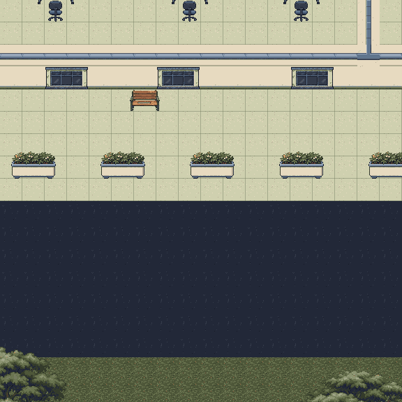
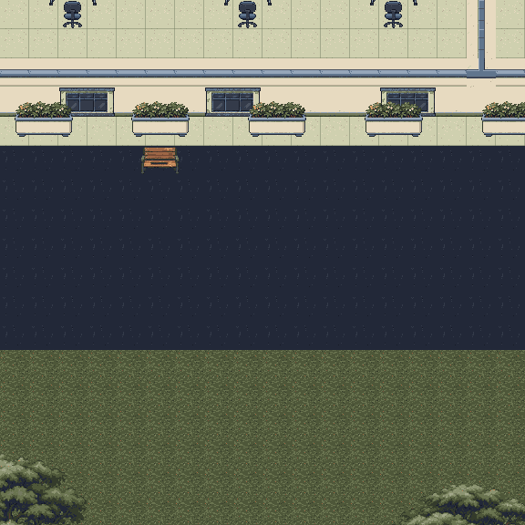

Building C: compact south frontage
Wall > one-tile planter strip > benches on the road edge > open road > sports lawn
Full Building C map | Source review | Snapshot identity | Native contact and pixel checks
Before

A broad paving area separated the wall from the pots. Benches appeared before the planter row.After

Plant contact sits against the wall in one tile. Each bench sits directly below a planter, on the asphalt edge. The open road meets grass immediately.| Band | Current placement |
|---|
| Wall ground baseline | Tile row 51 |
| Planter strip | One tile, row 51; 29 preserved pots |
| Bench / road edge | Row 52; four preserved benches |
| Open road | Rows 53-58 |
| Sports lawn | Starts row 59 |
Wall-front foliage uses the shared foreground-dressing layer, so the wall does not clip the leaves. The same native pot and bench art is retained. The main entrance gap and west/east connections remain open. Signs and loose clutter are kept at the entrance sides and service edges.
Ground-floor scenery only. Upper-floor render hashes unchanged: True. This review does not establish campus runtime collision, lighting, traversal or whole-map art acceptance.
Source map SHA-256: 7fa9a691422d380f2f4df9ca008058520cb875a28bca66af51f3054fdadb1d46.